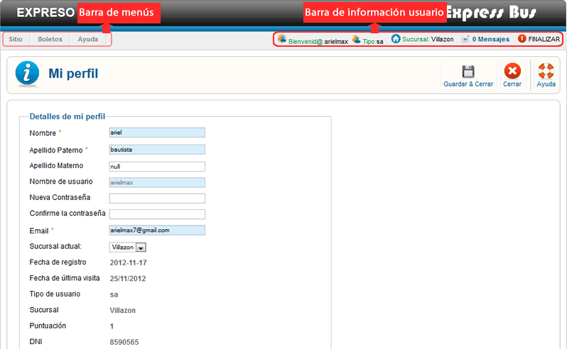

Ayuda Mi Perfil
Contenido:
Vista General
Mi perfil permite cambiar los datos del usuario, el nivel de cambio variara dependiendo el tipo de usuario.
Si no quieres cambiar ningún dato has clic en cancelar, para aplicar los nuevos datos has clic en Guardar & Cerrar.
Barra de Menús

La barra de menús nos permite tener un acceso direccto un sector del sistema, permite una mejor navegación por el sistema.
La barra de menús varia en base al tipo de usuario logeado (niveles), si ingresa el super admin tendra mayores opciones en la barra de menús, adiferencia de un usuario de nivel bajo solo vera la barra de menús relacionado con el cargo que este ocupa.
La barra de menús estara desactiva en esta página.
Barra de Información Usuario

La barra de información usuario nos muestra la información del usuario Logeado, también nos permite tener acceso directo a mensajesprovenientes de otros usuarios del sistema, podemos finalizar la aplicación de forma segura haciendo clic en Finalizar.